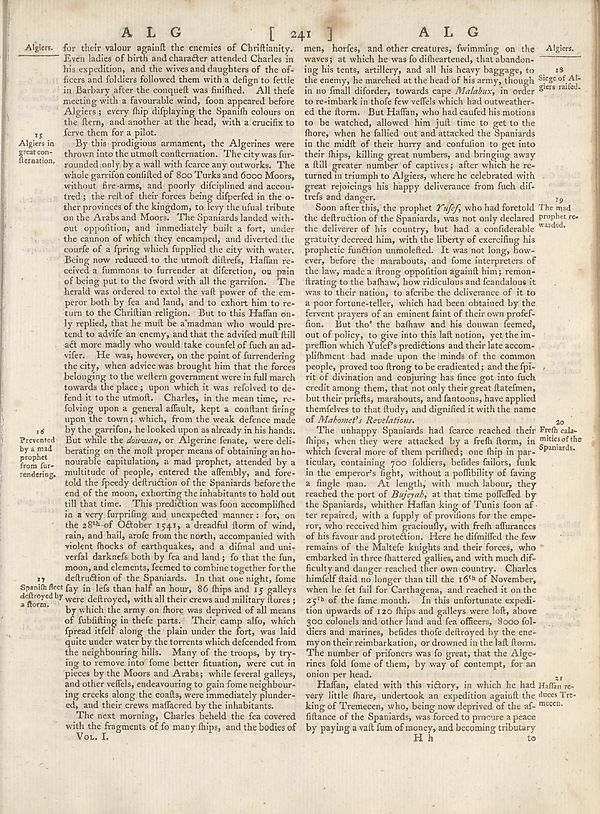

Source · scan and Parse blocks
Layers 3

Parse text by block reading order
- 0Page-header**AL G** **241** **A L G**
- 1Section-header_Algiers._
- 2Textfor their valoragainl the enemies of Christianity. Even ladies of birth and character attended Charles in his expedition, and the views and daughters of the officers and folders followed them with a delger to fertile in Barbary after the conquit was finished. All trade meeting with a favorable wind, footop appeared before Algeria; every flip displaying the Spanish colours on the stern, and another at the head, with a cruiser to fierce from a plot.
- 3TextBy this proudgism armament, the Algerines were thrown into the utmost confianeration. The city was fur- rounded only by a wall with force any outwalks. The whole grandma could if 80o Tinka and Ooco Moors, without fire-arms, and poorly displined and acoustic tret; the reflet of their forces being dipedled in the oro they provoted of the kingdom, to key the final chance on the Arabs and Moore. The Spaniards landed with out oppositions and immediately built a fort, under the unions of which they exempted, and directed the courte of a spring which fupplied the city with water. Being now reduced to the utmost difrets, Haffan received a immune to formative art direction, on pain of being put to the fword with all the garrition. The kanal was ordered to send the full power of the empre! body for and land, and to cahar him to return to the Christian religion. But to this Haffan only rreified, that he must be animals who would pee tand to advise an enemy, and that the dividend mill fill act more madly who would take counsel of such an ad- viter. He was, however, on the point of farredering the city, upon an witness towards him that the forces belonging to the wellern government were in full marach towards the places, upon which it was referred to de fent to the utmost. Charles, in the meantime, reloing upon a general affault, kept a constant firing upon the towns; which, from the weak defense made by the garrition, he looked soon as already in his hands. But while the obvious, or Algerine female, were deli- bordering on the mollit proper means of obtaining an bouncable captivities, and probably afforded by a multitude of people, entered the affembly, and fore told the flying distribution of the Spaniards before the end of the moon, extending the inhabitants to hold our till that time. This prediction was foon accomplished in a very fulfilling and unexpected manner: for, on the 39% of October 1541s a deadful from of wind, rain, and hail, arole from the north, accompanied with white flocks of earthquakes, and a dindi and univerful darkade both by the sand had; so that the fun, moon, and elements, forced to combine together for the dethration of the Spaniards. In fact one night, force in first than half an hour, 86 things and is greatly were defrtedy, with all their crews and military flores; by which the army on there was deprived of all means of diluting in their people. Their campsite as which spread lifel along the plain under the fort, was laid quite under water, the overre which defend from the neighboring hills. Many of the troops, by trying to remove into force better situation, were cut in pieces by the Moors and Arabes, while fever, pylley, and other reptiles, endeavouring to gentlem go under the canals, were immediately plunder- ed, and their crew ensulfants by the inhabitants.
- 4TextThe next morning, Charles ledell the far covered with the fragments of fo many things, and the bodies of
- 5Textmen, horses, and other creatures, fevimming on the waves; at which he was fo dihertered, that abandon- ing his tests, artillery, and all his heavy bagages, to see enemy, he marched at the head of his Army, though in no fault diforer, towards Cape _Middos_, in order to embark in those few vehicles which had outweather- ed the forms. But Haffan, who had used his motions to be watched, allowed him just time to get to the floors, when the failed out and attacked the Spaniards in the multit of their hurry and condition to get into their flaps, killing great numbers, and bringing away a full greater number of capitars; after which he recened in stumpt to Algiers, where he celebrated with great rejoicing his injury deliverance from both difi- trots and danger.
- 6TextSoon after this, the prophet _Tuf/f/j_ who had fortotold the deflection of the Spaniards, was not only declared the delivery of his country, but had a considerable activity decreed him, with the liberty of exercising a projectile motion unmelded. It was not long, how ever, before the manabouts, and some interpreters of the law, makes a strong opposition against him; remost- fritating to the bashy, how ridiculous and Canadian it was to their nation, to defend the defence of it to a poor former-celler, which had been obtained by the current players of an comment faint of their own profefi- tion. But that the bashwa and his downward femen, and of policy, to give into this limitation, yet the im- preflion which Yufe’s predlifessons and their late accom- plillment had made upon the mind of the common people, proved too fringe to her melanzie, and the fifi- of duration and comparing has face got into facts credit among them, that not only their great liathens, but their profits, manabouts, and tuntions, have applied friendées to that study, and digidist it with the name of _Allement Residence._
- 7TextThe anthampy Spaniards had force reached their frh cal- mits of the Spaniards.
- 8TextHaffan stated with this victory, in which he had Haffan re vary little fhares, undertook an expedition againl the doces Trekking of Temsman, who, being now deprived of the dirt recent.
- 9Textfinanced of the Spaniards, was forced to procure space by paying a vail fum of money, and becoming tributary
- 10Section-headerAlgiers.
- 11TextAges of Al-ders railed.
- 12Section-headerSpaniils feet of delayed by a floor.
- 13Section-header15 Prevented by and prophet from fore- rendering.
- 14Section-header27 Spaniils feet of delayed by a floor.
- 15Texta a signed Al-ders railed.
Provenance page_id, checksum, Parse model
- page_id
- britannica:309f765b1ecc83e0a7f7762e44b4a927a7555443:train:2307
- sha256
- 4ce2ea50e9d2f4035fe1405b86ee2d40131a8b739a494cc64b0c0fab124fe2a5
- Parse
- nvidia/nemotron-3.5-parse · finish stop